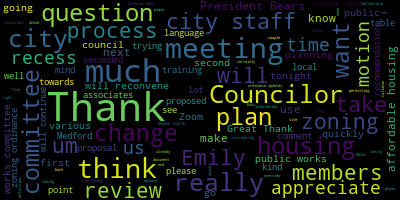
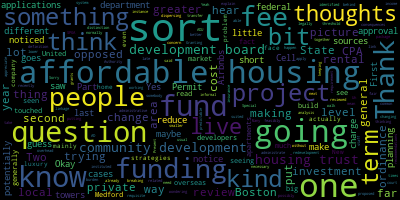
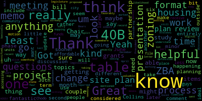

[Collins]: There'll be a meeting of the planning and permitting committee April 24th 2024. This meeting will take place at six p.m. In the city council chamber, second floor Medford City Hall, 85 George P has to drive and on zoom. Mr. Clerk, would you please call the role?
[SPEAKER_04]: That's a present. There's present. Also present.
[Leming]: Present.
[Collins]: Vice President Collins. Present. Five present, zero absent. This meeting is called to order. Thank you all very much for being here. We have several city staff in the room and on Zoom, in addition to the committee members and our zoning consultants. The action and discussion items for tonight's meeting is 24-033 which is the paper number for the zoning ordinance updates that we are working through with the Innes Associates team beginning a couple months ago and that will continue through most likely September of next year. We also have an affordable housing training run by Mass Housing Partnership. This will occur later in the meeting We will reconvene after the public works committee, so stay tuned for that we will take the zoning ordinance updates first and before I pass it over to city staff and our zoning consultant. just to quickly run through the top lines of what we'll be discussing tonight. Um, at our last planning and permitting committee meeting where we were discussing the zoning ordinance updates, we looked at the memo that is kind of an evolving document seeking to capture everything that we are trying to do in this zoning amendment process, pulling together recommendations from city councilors and from city staff and pulling in discrete policy recommendations from comprehensive plan, housing production plan, climate action and adaptation plan from the ZBA and the CDB and trying to put that into a document and schedule out over the course of the next 18 months how to group these various policies and projects into kind of topically batched projects. So we took a look at that we're still adding to that menu to that memo and that will continue to evolve and change in the statuses for the various policies. We'll get updated as we go along. What we have on deck for tonight is reviewing definitions and definitional changes recommended by city staff. And as associates, we're going to look at site plan review, as well as mapping framework. And at the end of the meeting, I think we can also just do a quick overview of kind of what we're currently planning for, you know, the next step after this one. This process has been one of trying to plan a couple steps out even as we're working through current steps. With that, I'm happy to pass it right over to Emily Innes unless city councilors or city staff have anything they'd like to say first. Seeing none and no hands raised on Zoom, Emily, please go ahead.
[SPEAKER_08]: Thank you very much, Vice President. I am going to share my screen. For the record, Emily Ennis of Innes Associates. I'm joined by two of my colleagues, Paola Ramos-Martinez and Jemmy Rocha, and also by Jonathan Silverstein, whom I believe City Council knows and has been working with. He will be providing the legal review throughout this process. It's good to see you all again. I want to walk you through where we are today. So, you should already have received the updated memorandum. I think as Paula mentioned at our last meeting, our intent is to send you that before every meeting. So, you know, the status of the things that we're working on. I've also got a little bit of an update to that. So, first of all, we are here on April 24th. We've had our kickoff. We've discussed the initial staff status meeting. So, we're moving forward. I'm going to give you the list of definitions that we're working on pulling actual text together for. And as Vice President Collins said, I talked to you about some of the other issues that were the early identifiers. And then we're going to be moving into a cycle over the next few meetings until we get to the last meeting before June 30th, which is the last meeting. of the fiscal year of reviewing draft text, hearing from you, your comments on it, and then at the meeting after that first review, having you, if you're comfortable with it, obviously recommending that draft text to move forward to city council. for adoption. So that's going to be a continued cycle. In addition, we're going to be looking at the other pieces that are part of this process. If you remember, we talked about a phase 2 and phase 3 of things that happen after the end of this fiscal year. And that's going to include in looking at specific neighborhoods. So we'll be in a cycle of we're going to be doing mapping and analyses. And I'll talk a little bit more about that at the end of the presentation. But as we do that, we're going to keep you updated as to progress and the goal of that. Is to have a full work plan for you to cover the period from June from July 1st through December 31st and then looking at what happens between January and June of next year. So we would anticipate giving you that work plan at the end of at your last meeting in June. So for now, just reviewing the additions to the memo that you received, which were recommendations from Vice President Collins. There was an extensive set of recommendations from the building department, some of which we've incorporated into what we're going to talk about today. and climate brainstorm from PDS. I should note that some of those will be zoning related and others may have implications for zoning, but aren't necessarily directly zoning related. We have brought, as I mentioned earlier, Jonathan Silverstein on board and he will be providing us with his recommendations based on the work that he's done with you to date. And so we'll be incorporating that into either the next iteration of the memo or the one beyond that. And we'd also like to add reviewing and adopting the GIS-based zoning map. I believe you adopted the zoning map or changes to it a couple of years back, but this will be a GIS-based one that the city staff have been working on and that we are going to take and do some of our analyses with. These are the definitions, so I know that Paola presented at your last meeting a series of definitions. We have added to that the definitions from the building department's recommendations. And so this is the full definitions of this round of the discussion. I would anticipate as we move into phases two and three that we will be adding and clarifying more definitions. but this at least gets us started. We're just filling this in now and should anticipate having all of those definitions for you for May 8th for your review. Questions, we'll have them to you before the meeting, so you have a chance to review them. But as you look through this, if you have any questions for tonight, I'm happy to discuss them. There was a little bit of overlap between what the building department had identified and what we already had, so that was good to see. that there was consistency there. We did also have in our memo, our first memo, the idea of adding a few new uses to the table of uses, but also replacing the parking codes with the rather than having a code for parking and a code for loading, and then somebody has to go to another table to find those. replacing them with the actual square footage requirements in the table of uses. We're not changing those requirements at this point. That may come later in the project, but right now we're just establishing those, just adding the spaces requirement rather than a code and establishing uses allowed on the ground level for mixed use buildings. I do have, so this is your existing table of use and parking regulations. I have already made the change to have the parking code and the loading code, instead of it being code, being the actual requirement. So that's what this will look like. So that is the yellow. The PC is the parking code. The LC is the loading code. And you can see, for example, detached single-family dwelling instead of it being parking code A. It's two spaces per dwelling unit for attached single-family dwelling to dwelling structure instead of parking code A1. It's 1.5 per dwelling unit and as I go through, you'll see what that looks like. In orange, this orange and white over here, I have identified where we have potential changes and definitions that may change the use table. You see the multiple dwelling class A and class B, that's part of our remit to consolidate those. And as we go through, you can see again the changes for the parking and loading. And we have a couple of other uses coming in. Doggy daycare, for example, will need to be added to the table of uses once we have a definition for it. Cafe, coffee shop, motor vehicles, class 3 junkyards. We will also propose what those uses should, which districts those uses should be allowed in as they come through. And then we just have one question for city staff. Accessory childcare had a yes in the parking code, so we don't actually know which one that applies to. So we'll look at that. But that's a first step in the long list for changes. As per usual, I'll have this presentation to you after tonight's meeting. Going forward, you will have the changes prior to the meeting. We just had a short timeline this time. I didn't want to talk about site plan reviews, so if you remember from the memorandum, we had the possibility of major project, minor project, Dover amendment, and potential municipal site plan. So, I have summarized for you, this is your existing major project review and just some key pieces, not the whole text, but the community development board is the review authority. There are certain thresholds for a major project review. There's a specific timeline. You also have the existing site plan review for Dover amendments. And the same review authority threshold is a little bit lesser. It doesn't qualify on one of those regulations. The timeline is the same. So we would be looking at whether or not the current process for both of those is consistent with best practices and just calling out that site plan review is the subject of conversation at the state level. right now, so there may be some changes to that. We're keeping an eye on that. And then, should you add a minor plan review process, frequently this is done as an administrative review and allows for site plan review at lower thresholds than what you currently have. Applicants who need a waiver or need something, you know, disagree with the administrative review can always apply upwards, so this is something to consider. And then adding municipal project review to allow public forum for questions, information about a project, discussion about the project, and maybe even the possibility of tweaking some of the design to address community conversations. Without a municipal project review, sometimes that information cycle and response gets lost. So that's something to consider. This is one from Pittsfield. It's an example of an administrative review where there's a checklist for the city staff to go through with the applicant. And then if there's something that doesn't fit. The applicant can, as I said, go to the Community Development Board. It just so happens that in Pittsfield, it's also a Community Development Board. Brookline has municipal review for educational uses, specifically those in a residence district. It can be used to review non-profit educational, but also municipal educational, thinking about expanding this to other municipal uses in Medford and what that would look like. And then finally, for our mapping analyses, we are going to go back to the comprehensive plan. This is the future land use map of the comprehensive plan. look at that plan's definition of corridors, squares, and neighborhoods, and start our analyses for what should be addressed in phases 2 and 3 of this project. And this will define the work that we do between now and the end of June and the work plan that we bring forward to you at the end of June. So with that, that's the basic update that I wanted to give to you. I'm happy to jump back to any of these slides. I'll stop share for now, but I'm happy to jump back anything that you all want to discuss. And then I'd love to get some feedback on your ideas about the definitions, the site plan review, or what you're seeing in terms of the parking. After we move through to today's, so for the next week, we'll, the next time we meet on May 8th, you will have the draft definitions, you will have the draft language search site plan to review, and then you will also have our proposals for the next stage of things that we bring to you. I know, for example, Councilor Leming has given us some text. for some changes. We are reviewing that internally and discussing, we'll then discuss with city staff and then yourselves where those fit in the process and excited to hear if others have things that they'd like to bring forward.
[Collins]: Thank you so much, Emily. Really appreciate that overview. I know I have a few questions based off the presentation, but we'll go first to city councilors. I see Councilor Leming. Go ahead.
[Leming]: Two questions. First, so I noticed the change of definition from the SPGA, Special Permit Granting Authority, to just the Community Development Board. I was just wondering what is the, what are sort of the consequences behind that change? So could you just explain a little bit to me about changing from one term to the next? Because I did notice that when I was going through the ADU ordinance.
[SPEAKER_08]: Yes, so I believe that came from the building department. I'll have to double check the status sheet on that. And I think it was that simply that the community development board needed to be added to the definition and then just confirming it. I don't think it's necessarily changing any. policies, there were a number of consistency questions that came up and that I believe that was in that category of making sure that the terminology was consistent throughout. But if I think Alicia Hunt is there and Danielle, if you have additional information on that, why that might have come from the building department that I'm happy to cede my time to you all.
[Leming]: Thank you. And the second question, which is sort of related. So I noticed the distinction between approval of a project by the community development board and sort of lower threshold for approval by just the planning department, the administrative review. And one proposed change that I'm trying to make to the AD ordinances to sort of reduce that, just for instance, from a community development board review in all cases to just administrate a review by the planning department. I guess, are there other sort of, in your analysis of our ordinances so far, do you sort of notice other cases where something that normally would have a, would need a permit by the community development board would better be suited to just be reviewed at the staff level? I'm just kind of thinking like smaller projects, maybe. What's your sort of informal take on that so far?
[SPEAKER_08]: I think you're you and I are thinking the same way about that. Yes, I've seen it in a number of places where it's smaller projects projects that don't necessarily that that are fairly straightforward, you know, a change of use an existing building, but, you know, might have some ramifications that need to be reviewed. Your thresholds for your major plan review are already relatively high. I've seen one with much lower thresholds, so I'm less worried about that. But I think there's 2 reasons to do an administrative review. 1 is because the Community Development Board is getting a lot of fairly straightforward things that they really don't need to have. And the other, it's because you're trying to encourage a use that you really want and having administrative review might make the difference between that use coming in or not. I think the key to the administrative review, however, is making it very clear what the review is. And that's where the checklist comes in. It's like, yes, yes, yes. Oh, wait, this needs to go to the Community Development Board versus yes, yes, yes. OK, we're good. You can go ahead and do that. And I think that makes it easier. That type of thinking about how you structure the criteria for a checklist makes it easier for both applicant and the administrative review, the people doing the administrative review.
[Clerk]: Thank you.
[Hunt]: Director Hunt. I just wanted to sort of piggyback on that question and sort of make sure that we were, that I'm also understanding what Emily's saying and the use that I was thinking of is a good example of this, Emily, where right now under Dover, anything that is a protected Dover use under our current code has to go to the Community Development Board for site plan review. and special permit, and there are some cases that are smaller than our standard site plan review threshold that's in the presentation, and that those are ones that maybe would go for administrative review rather than for site plan review.
[SPEAKER_08]: Absolutely. I think, for example, say you have a child care center in a building and that That use ends because somebody's, you know, decided they're moving their business elsewhere and somebody else comes in for childcare use Dover amendment. It wouldn't normally trigger the CD board because it's less than that 10,000 square feet, but it's the same use. But it still has to go in front of the board because it's a Dover amendment use. I think that would be an ideal situation for administrative review. Same use, going into the same place, just because it's Dover, it shouldn't have to come in front. Whereas if it were a much larger change, say something from, you know, it might be an educational use that's not childcare that might have a greater intensity of use that might then need to go to the community development board. So I think we could have a conversation about where those thresholds need to be. You know, we can come up with a structure, but it's what triggers the threshold that I think is critical. And something like a childcare, it's a small business. You want it to be there. It's an important use in a community. So you don't want to put barriers beyond what's needed for that. And I think that's really where the administrative review can be helpful in reducing barriers for those smaller uses or the less intense uses.
[Collins]: Thank you so much, Emily. Thank you for the question. Director Hunt, anything more from yourselves at this point?
[SPEAKER_05]: One of the questions I think when it comes to site plan review is enforcement. Is this same administrative mechanism going to be available for use for modifications to a site plan that's ongoing? It's not uncommon during the course of a project being instructed on a site plan that things change. And sometimes you have to determine is it major or minor? Is it a minor change? Can it be just administratively handled? Is it a major change that needs to go back to the board for reconsideration? Is that language going to play into that in any way?
[SPEAKER_08]: Yes, I think it should, for exactly the reasons that you just said. And I think that breakdown is perfect. How do we define what a minor change is that can just be checked off? How do we define what a major change is that needs to go to the board? And the same thing is true for the waivers, right? Because if somebody comes forward and says, I'm this close to administrative review, but I have just one thing, what's the threshold that kicks it up to the Community Development Board. We could probably make those fairly consistent with each other so it's clear to all what triggers the higher level of review or the more intense level of review.
[SPEAKER_05]: Right, because it's certainly likely in an ongoing project it's going to be the building inspectors can be the first one to pick up on some change that's ongoing that isn't consistent and start kicking it upstairs and need to know who, how, what, and where, or is being told in a sense, when things change, we need to think about these things. And if they have a sense of what constitutes a minor and a major change, they can give some guidance or at least be aware of it as it happens. And it's not uncommon to see during a project, especially a large project ongoing and suddenly they can't do this or they wanna do something differently. And you're like, oh, should I tell somebody or is this okay? And I just wanna make sure they have some guidelines so they go back in and understand what to do.
[SPEAKER_08]: Absolutely that clarity of guidance is hugely important, especially when somebody's out in the field and they're like, I'm not quite sure what I should do here. So, um, you know, there's. I think we can build in, again, that checklist. Does it meet this criteria? Fine, I can deal with it. Does it go above and beyond that? I've got to kick it up to somebody else. And then the documentation of when it's an administrative decision, that that decision was made within that. We can work on the forms or whatever would be needed to fill that out. We can discuss what those would be.
[SPEAKER_05]: Right, I do it in vain with the idea that technically the building department is the enforcing agent for the planning board, so we just want to have those guidelines, so. Okay, thank you.
[Collins]: Thank you, Commissioner. President Pierce?
[Bears]: Thank you. Chair Collins, thanks for this update and the presentation. Super helpful to see. I just had a couple questions. One, just could you go a little bit more into when you mentioned that as site plan review is being discussed at the state level, could you go a little bit more into what those discussions look like? And, you know, what is, you know, is that a change, a legislative change or something else and what the likelihood of that happening in the near term is?
[SPEAKER_08]: Yes, and I will apologize. I haven't looked at it in about 2 or so weeks. So there may be a further update to that. We've got somebody on our staff who's. Also looking into it, but she and I haven't connected on it. So there has been a proposed legislative change to. So, at the moment, site plan review is not actually covered under the zoning law in Massachusetts 48 the special permit processes, but site plan isn't there's a lot of. case law foresight plan, but every town, as I've found this year, has a slightly different way of doing it. So there's been legislation proposed. The Mass Municipal Lawyers Association has, this is the last part that I've seen, has come forward with a letter stating some changes that they would like to see made And then my understanding is that there's going to be some discussions on that. So, I don't know if it's something that's going to happen in this legislative session or if it's going to be put off, but coupled with the discussions about site plan review for the MBTA communities process, I would expect that conversation to be ongoing. Just to give a very brief summary, some of the communities have a site plan review process that's quite close to a special permit process. And the concern is that it should really be, in terms of the MBTA Communities Act, that it should really be an as of right use as required by law. And so site plan review processes that are too close to a special permit may be out of compliance with the idea of an as-of-right use. So it's that threshold of review and what's required is the issue. Site plan review should really be about um, uh, putting modifications or, or, um, controlling the use and not about denying the use. Whereas with a special permit, uh, the planning board or in your case, uh, community development board can actually deny the use.
[Bears]: Got it. And thank you. I'm now seeing the, uh, the bill, um, taking a look at it.
[SPEAKER_08]: And we can delve into it more and have an update for you on May 8th.
[Bears]: Yeah, it looks like it's been reported favorably, but now it's sitting, so who knows what that means. President Bears, for the record, what's the bill number? It is H3551.
[Collins]: Thank you.
[Bears]: So at least that's one that the NMLA sent a comment letter in on in December.
[SPEAKER_08]: That's the one that I have. And I think they reissued the letter, re-sent the letter maybe about a month ago, a little bit less. So I'm happy to provide you all with their public documents. I'm happy to send them over to you if that would be helpful.
[Bears]: Got it. Yeah, it looks like it's still alive. So that's more than you can say for a lot of bills in the legislature in April of the second year of the term. A couple other questions. So just so I understand the timeline, we are, is it fair to say that mainly what will be being worked on before June 30th are the definition questions, the site plan review questions, the update to the formats of the table of use, and I saw the digital, the GIS zoning map, or is that basically what we're working on between now and June 30th?
[SPEAKER_08]: I anticipate now that we will move forward with more than just that between now and June 30th. What we're looking for is those things that are easiest to address. So, as I said, I hope to bring at least the first round of language on site plan review to you for May 8th. The definitions for May 8th, as you review those, we'll be working on the next stage. So there are in the status memo, I think there are a few more things that we could bring forward. I think based on the schedule that I put out for you today, that we should probably have about three rounds of changes between now and June 30th for you to look at. So we will advance more than just what I've presented today. I think what we're trying to do is set up the work plan for the more intensive neighborhood square corridors for happening after June 30th, but otherwise tackling as much as we can between now and then of those known changes.
[Bears]: Great. Got it. That's helpful. Thank you. And last thing is just a On the memo format, I think the memo is great. I think these presentations are fantastic. I think just a minor thing that might be helpful, at least would be helpful to me on the memo format is on the topics table. If we could split it out so that anything that's being considered in phase one is kind of in its own, or the proposed changes table, sorry. Anything that's being considered in phase one, be it like its own table and then anything that's maybe going after that. just be in a second table. The formatting could just stay the same, but I just think it's almost, you know, if it was an Excel spreadsheet, I would just sort it, you know, but that would just be helpful for me to kind of see what we're doing sooner rather than later, or at least considering doing sooner rather than later. And then I think also what might be valuable to include in the status memo and somewhere, you know, I'm not sure as I look through it exactly where maybe it would be, just before the topics table, or maybe just after the topics table, would be pulling out those items that we've already identified as needing further study. I know that that's going to be part of what we're doing in mapping over the next couple months, but I know we had a discussion in a recent meeting about the inclusionary, the transportation demand management, the linkage, and the need for the nexus study. And then we were also talking about, with planning development and sustainability, the neighborhood studies and the various grants that were RFPs put out, grants acquired. I think it might be useful to have a table that includes those items, just so that we can see how long that list is getting, if it starts to get longer, since those are the few items that will really take you know it's that where we may need to go out and get more funding or find more grants or have a six month or 12 month you know period where a study is happening so um that would just be another minor format change that would be helpful for me to see but otherwise this is uh you know i'm really excited um and i feel like having these memos updated every two weeks is a great way for us to just keep you know chugging and uh checking boxes and getting work done so thank you
[SPEAKER_08]: I'm happy to make those changes. The other thing I was thinking about this afternoon is I really need to number those so we can talk about, hey, look at number five in this table, look at number 32 in that table. Because I was getting frustrated myself with not having the numbers. So happy to make those changes. And as we continue to use that memo together to review process and where we are and where we're going, any other suggestions that Councilors have that will make it more of a workable document and easier to use. Happy to take those on. So thank you for those. I think those are great ideas.
[Bears]: Great. Thank you so much. I really appreciate it.
[Collins]: Great. Thank you so much, President Bears. Thank you, Emily. Really appreciate this discussion. Just a couple clarifying questions from me. I just want to confirm we're talking about this committee reviewing proposed changes to the definitions at our next convening in this committee. That includes the table of uses proposals as well, is that correct?
[SPEAKER_08]: That would be correct, yes.
[Collins]: Great, thank you. And just to, my preferred way of taking in information is just to paraphrase and make sure that I'm getting it right. So my understanding is that Um, for example, with the table of use and parking regulations, nothing is actually changing. No regulations requirements are changing. We're just updating the nomenclature to make it consistent. Is that correct?
[SPEAKER_08]: That is correct. Currently, you use letter-based codes, and we're just replacing the letter with what it's actually referring to. So it may be spaces per unit, per employee, per square foot. We're just moving that into the table to just make it easier to see all at once.
[Collins]: Great. Thank you so much for confirming. And I think that that will be a welcome change, as we've mentioned before. you know, part of our work, you know, in the later half or three quarters of this process, we'll be looking at more substantive, we'll be considering more substantive changes to the neighborhood maps, incorporating stuff from our various plans. And in other cases, we're just trying to make these documents more legible and more useful so that the uses and the development that we already allow and that we want to encourage will just be easier to do from both the business side and from the city side. And I think that certainly falls under this category. Just jumping ahead really quickly back to the site plan review proposed changes. If you wouldn't mind returning quickly to the recommendations for potentially considering minor plan review, administrative review, municipal. I'm curious, what's the difference between minor and administrative? Are you considering both? That sounds to me like it might be an either or, but I'm curious the distinction there.
[SPEAKER_08]: I'm actually thinking of it. I'm just pulling up the slide so you can all see it. I'm thinking of minor plan review or administrative review as the same thing. It doesn't have to be. The CD board can do a minor plan review, but in the interests of thinking about how to streamline things, I'm recommending that your minor plan review be, that you consider that your minor plan review be an administrative review. rather than simply a second level for the CD board. And that, again, it's twofold. It's to reduce some of the load of the Community Development Board. I've never met an official yet who didn't mind having their workload reduced, but also to make it easier for smaller uses, smaller businesses to navigate the system. and move forward, and that can be done at an administrative level. So when we talk next time, I can present kind of the pros and cons for administrative review versus a minor plan review for a CD board.
[Collins]: Great. Thank you so much for clarifying. I think that makes sense. And again, towards the end of streamlining the processes and making the language really intuitive, I think what we're talking about here is creating a review process for minor plans. So that recommendation makes sense to me. Any further questions from councilors? President Bears.
[Bears]: Thank you, Chair Collins. This may be a left fielder, so take it with what it is. When we talk about site plan review, I know that the 40B process is entirely outside of site plan review, but I just, you know, I see how often the ZBA is meeting on 40Bs and kind of negotiating these different projects. And, you know, some of them have, you know, not speaking to the process or to how the ZBA is handling it, because I'm sure they're doing everything that they need to be doing. It just does seem to be like it's a time consuming amount of time that the ZBA is spending on it. And I do know of at least one project where the time may have been determinative in future actions. And I'm just wondering if there's anything, is there anything that we can do in zoning to around the 40B process that isn't good in any way, you know, make that happen in a more timely manner or not have the ZBA having these extended, you know, four, five, six meeting sessions on 40B. And also, I'd be happy if chair or director Hunt or planner Evans has comments on that. I'm sure they have thoughts on it as well. And I also raise this in the context that we just had another 40B application, so.
[SPEAKER_08]: I don't believe there's anything you can do in zoning for the 40B because the comprehensive permit is its own process under state law. We could look at that process under the comprehensive permit, which as you just noted, goes through the ZBA and just see if there's any recommendations about how the process has been handled at the city level. Is there another best practices? So I'd be happy to talk over that with uh director hunt and with mr silverstein to see if there's there's something that can be realigned there but to my knowledge there's nothing in zoning itself that can address it it would have to be a that separate process and i defer to either director hunter or mr silverstein for their comments as well and i'll go to them really in a second but i think maybe i
[Bears]: to clarify, is there some way we could create zoning that would encourage people to go a different path? Because I think that the reason for 40B's existence and wanting more affordable housing, all of that's fantastic. Great. But sometimes you have less than ideal outcomes from the 40B process where you can't do the mixed use. You can't do the larger planning. You can't align it with comp plan. So that kind of thing, too, I want to throw out there. But I'll stop. since I'm probably the least informed person on this.
[SPEAKER_08]: I will just add a Councilor that you could you could do incentive zoning, and that could do that. That could address those issues. So that might be something to consider. And that would come into our discussions in phase two and phase three for the squares, the corridors and the neighborhoods, particularly, I think, given the comprehensive plan, the squares and the corridors, that would be an appropriate discussion there.
[Hunt]: Madam chair. Um. So I will say that our ZBA is choosing to be very, very thorough on these would have liked to see these buildings go through site plan review. So they are going through all the steps of a site plan review because they want to see these built projects be the best they can be in Medford. But it is the choice of the chair to be so thorough as he is being. It's not actually a requirement that they hold so many meetings and be this thorough. Just to be.
[Clerk]: Right.
[Hunt]: By law, they have to complete the review by 180 days. They are sort of choosing to take that and on the first one actually took longer than that for a variety of reasons, including some delays on the front end by the applicant. So it's, I would just say that it's not the law that's requiring this many meetings or for them to take this long on this project. Um, I have been actually we've talked to other housing developers that are interested. And in the, the area in general and some of it is that what they want to do really isn't allowed under our current zoning right like a multifamily in this location, or mixed use on the ground floor with housing above it. Like these things aren't currently allowed. And so some of this review, reviewing, looking at Mystic Ave and some of the other areas to look at changing and zoning, um, would, would help with this. We do now have Safe Harbor. So for two years, we can't get any more new 40B applications. The one that was just filed that is in fact opening its public hearing next week. Um, technically filed in 2020, and so, therefore, it's before we had Safe Harbor. Um, so if there were to be other 40Bs come forward, it would be as a friendly 40B because, for example, if there is a location where it actually, we all agree, would be a good location for a multifamily building, um, but it's not allowed under zoning, one route might be a PPD, but another route could be a 40B that they could go through. And if we were to do it in a more streamlined fashion, it would be a little easier. I think some of this is that the zoning board is being very detailed oriented. Normally, they're a legally driven board. And usually, this piece of it actually happens under site plan review. We've had a number of buildings that will have three or four site plan review meetings to get all the way through the process, at least. I mean, even I think Salem Street's had three or four already. So we are trying to, yeah, I think that's sufficient. I feel like there was something else you asked about, but.
[Bears]: I guess more my point is, it sounds like we could do an overlay or a PDD faster than we could. And it's again, I get why the ZBA is doing this on the 40B side, because it's outside of our zoning entirely, but it just seems like a less than ideal procedural. Yeah. It's really more my fault, throwing it out there.
[SPEAKER_05]: And again, in my experience in other communities, this is sort of the same basic format followed. It is sort of planning department driven in a 40B, but it's still the ZBA because that is essentially what a comprehensive permit is. You're lumping site plan on top of the ZBA approval process and combining it all, one for theoretically more efficient process. So they sort of become your site plan community development board. And that's what drags these things out. But the ones I've seen before, this is kind of what happens.
[Collins]: Thank you. We were speculating last night. It makes me think of Jaws every time. Thank you, Commissioner. Recognizing Attorney Silverstein.
[SPEAKER_13]: Oh, thank you, Madam Chair, President. I guess the only thing I would add in following up, I was going to mention the PDD process, which I think really is the incentive zoning that Emily referred to. And we've seen that it's been working so far because it offers a mechanism that is no not, you know, not without procedural steps, it's less cumbersome than going and getting a project eligibility letter and going through the conference permit process and provides more flexibility. And so I do think that that has shown itself in a pretty short time to be a pretty useful tool and a much more collaborative tool than 40B. And I guess I'll just throw out the other possibility of 40R zoning, which provides incentives both to developers and to the city for appropriate circumstances for mixed using or multifamily residential. And that also is a more collaborative process. So that is a zoning process as is PDD. So while I agree with Emily that there's nothing you can really do to affect the 40B process in zoning, there are opportunities to create zoning that maybe gives another path to developers.
[Collins]: Thank you so much. I think that point is well taken. And important to keep in mind as we do progress towards the squares, corridors, and neighborhoods part of this process in phase two and phase three, how we can essentially, I think that a lot of our shared goal here is to how to create the zoning that aligns with the uses that city, the resident wants, and that makes it easier for us to take developers up on the development that we really want them to be doing in the city. Thank you. Seeing no other further comments on this time, I'm just going to shift towards kind of summarize. Oh, Director Hunt.
[Hunt]: I just wanted to ask one further question about the items that were on this list just to make sure we were all understanding the same thing. The section on the municipal administrative review language. that I wanted to see is that addressing the recommendation that has come forward around having municipal properties, municipal projects be separate from zoning but need to be reviewed but not subject to the same tests of, you know, variances if they're not meeting zoning. Is that what that section's about?
[SPEAKER_08]: Yes, my understanding is that the city was looking to have the ability to have a public review and therefore a public forum for municipal projects. But it's not necessarily as you point out, Director Hunt, it's not imposing zoning restrictions that would not otherwise be on a municipal project. It's more about creating that forum, that opportunity for discussion and that opportunity for information to the public. for those projects.
[Hunt]: It is our understanding in the planning office that right now, municipal properties, municipal buildings are subject to zoning. And if they, for example, wanted different setbacks, they would have to pass the variance test at the ZBA. So I wanted to make sure that through this language, that it's clear, because it was brought to my attention that that's not actually how it works in most or many municipalities, that municipal buildings are not subject to zoning. So I just wanted to check that if we needed, perhaps it's a question for Attorney Silverstein to review, that if we need to update any other language just to make sure that it's clear, because until now, like our architects working on the fire headquarters, for example, felt that they were being held to the zoning restrictions of Medford's municipal zoning, because they didn't see anything in the language that said that a new fire headquarters would not be.
[SPEAKER_13]: I can speak to that. So there are many municipal zoning ordinances and bylaws that have exemption either partial or complete for municipal uses and properties. My memory, and I'm just taking a quick look, is that there is an exemption from some special permit performance standards for municipal uses right now in the Medford ordinance, but there is not a broader uh exemption from um from zoning and you know i so obviously educational um projects have the benefit of the dover amendment but other than that it's completely a matter of uh, the extent to which, uh, the city wants to exempt its own projects from zoning regulations. So, uh, that's a policy decision. It's easy enough to write a broader exemption. And I would say, let's definitely put that on the list of things to discuss.
[Collins]: Thank you. Attorney servicing. Appreciate that. And I think that, um, we should certainly add that to our list of items to check and double back to either at the May 8th meeting or at the appropriate time to make sure that if this is being addressed through language changes to municipal review, then it's consistent elsewhere throughout our zoning ordinances. Thank you for taking a first approach at that. So we have about five minutes until we should take a recess of this committee so that the Public Works Committee can use this space until around 7.30, and then we will reconvene in this committee. So I just want to try and quickly summarize us towards the end of this topic.
[Jim Lister]: We do have a question from a resident.
[Collins]: Thank you, Councilor Scarpelli. I do see that I'll get to him in just a second. Thank you so much for flagging that. I just want to make sure that we're all clear on what we're preparing for for our next meeting, anticipating the proposed definition change language, as well as table of use proposals, recommended language on site plan review, and then the proposal for mapping and the GIS zoning map. Emily, are we expecting that for next time or just an update to the status memo bringing us closer to those proposals?
[SPEAKER_08]: Just an update to the status, Madam Chair.
[Collins]: Great. Thank you so much. So we'll go quickly to Gaston. Just name and address for the record, please. And I've asked you to unmute on Zoom.
[SPEAKER_09]: Thank you, Madam Chair. Gaston Fiore, 61 Stickney Road. I was just wondering, I know that Somerville has an urban agriculture ordinance where, for example, it regulates, among a bunch of other things, even the keeping of chickens and bees. I know that Medford does not allow the keeping of chickens. So I was just wondering whether it would make sense, in spite of this ordinance, disowning ordinance revamp to consider something along the lines of what Somerville has. I think it would be very interesting and desirable to sort of allow some, you know, to some extent, urban agriculture projects. And I just wanted to make sure that if this is the most efficient time to consider something like this, that the city council takes this into account and consideration so we can have something similar to what Somerville has. Thank you very much, Madam Chair.
[Collins]: Thank you so much for that comment. We appreciate you bringing it up early in the process so that we can make sure that that is something that we do discuss with our zoning consultant, and we'll certainly have a conversation about that and see where it might be deliberated and discussed. I know this is in the interest of Councilor Callahan.
[SPEAKER_04]: Just wanted to thank you for that comment and say that Councilor Tseng and I have been discussing allowing chickens in the city.
[Collins]: Thank you, Councilor Callahan. Are there any further comments, questions from this time from members of the public, councilors, city staff, and associates before we take a approximately 30-minute recess?
[Bears]: see and note that that recesses for public work. Got it.
[Collins]: Yep. And just to restate, we will reconvene after the public works committee, um, has net, um, same zoom, same channel. We're taking a brief recess to allow for that committee. Um, thank you so much, Emily and associates, uh, city staff for being with us tonight. And again, for members of the public, um, we will reconvene after the public works committee to have an affordable housing training from the mass housing partnership. Do I have a motion to recess? Do I have a second on the motion to recess? Second. On the motion to recess by Councilor Callahan, seconded by President Bears. Mr. Clerk, when you're ready.
[Clerk]: Alicia.
[SPEAKER_04]: On the roll call for the recess. Councilor Callahan. Yes. President Ferris. Yes. Councilor Leming. Yes. Councilor Scarpelli.
[Jim Lister]: Yes.
[SPEAKER_04]: Vice President Collins.
[Collins]: Yes. Five in favor, zero opposed. The meeting is recessed and will reconvene. All right, the Planning and Permitting Committee is hereby reconvened. Thank you so much for bearing with us during our quick, short recess to take a meeting of the Public Works Committee, and now we're back. We are going to be hearing from the Mass Housing Partnership and housing planner, Aditi, on 24083 and affordable housing training. I will hand it over to Aditi to introduce our guests, and please feel free to take it away.
[SPEAKER_00]: Good evening. This evening we have with us Karsten Snow-Eckelberg and Laura Schufeld from Massachusetts Housing Partnership, which is a public nonprofit affordable housing organization. Karsten and Laura will give us a presentation that covers the need for affordable housing in Medford, the region, and across Massachusetts. The presentation will also include a basic overview of affordable housing development financing and how municipal policies can implement financial feasibility. Additionally, the presentation will explore what local resources and opportunities exist for communities to encourage productive housing. Over to Karsten and Laura. And welcome to Medford.
[SPEAKER_07]: Thank you for that terrific introduction. Let's see. Kirsten's going to share her screen. So thank you for having us tonight. Again, my name is Laura Schufeld. I'm the Director of Community Assistance at Mass Housing Partnership. Mass Housing Partnership is a quasi-state agency whose mission is to work with communities to create innovative policy and financing solutions that provide affordable homes and better lives for the people of Massachusetts. And we do that in a number of ways. We have our community assistance team, which is our outward facing team that goes into communities and provides technical assistance, strategies for affordable housing and planning. Our lending department is our bread and butter, and they use private sources of of private sources of capital to provide long-term affordable, permanent mortgages for affordable housing. One Mortgage is our first-time homebuyer program administered through local banks. That's the most affordable first-time homebuyer program in Massachusetts. And finally, our Center for Housing Data collects, analyzes, and shares information for effective policy creation. And just a few of the things that the community assistance team does, workshops and trainings, technical assistance. We assist communities and housing authorities who have surplus land that they want to dispose of for affordable housing. We help them do pre-development and request for proposals to dispose of it. And we also have resources and publications on a variety of affordable housing topics. So today, tonight, I'll say tonight, we're going to talk about the data story. So what the need for affordable housing is, key players in Massachusetts in affordable housing, sources of funding for affordable housing in Massachusetts, and how that is distributed, the impacts on the cost of delivering housing, roadblocks to housing development and opportunities for housing. We're going to do a little bit of tag team, but not too much, but I'm going to hand it over to Karsten now to
[SPEAKER_11]: Great, thank you, Laura. It sounds like I have the mic in the right place. So first, thank you all again for having us here this evening. Once again, my name is Karsten. I'm a senior real estate development officer on Laura's team at MHP. To start the conversation, we wanted to talk about how it is that we define affordable and define affordable limits. So we tend to talk about capital A affordable housing versus little a affordable housing. little affordable housing, anyone can live there, it's just a really great deal and it's affordable to the person that lives there. Capital A affordable housing, as we informally call it, is housing that is funded with certain programs, funding sources, and has particular restrictions and regulations on it. And in particular, residents that live there must meet certain income limits, and in return, their rent is capped at a certain amount. Medford is in the Boston, Cambridge, Quincy metropolitan statistical area, and the U.S. Department of Housing and Urban Development sets income limits and rents for statistical areas across the country based on context and characteristics of within those areas. And by comparing these limits and the rent limits to data, housing data on the area as a whole, we can really get a picture of what the affordability issues are. So here you can see the 2024 limits that just came out for the Boston, Cambridge, Quincy metro area. And the AMI 100% for the area is a little under $150,000. And going down, you can see various levels of area median income that are rent levels set depending on the affordability of the project, ranging from low income to very low income. And when we talk about the affordable rents, there's two different ways that an affordable rent is both calculated and used in a project. So it can be a percentage of a resident's actual income, which is the formula used when it's a housing voucher subsidy or in public housing programs. So in this instance, they pay a calculated percentage of their actual income, and it is adjusted if their incomes rise. The subsidy source, typically the government in this instance, will then pay the remainder to make up the rent to make enough to operate that unit. On the other side, it's calculated as a percentage of theoretical income. And so this is the case in most housing programs at the state level, as well as the low-income housing tax credit, which I will get into in a few minutes. This is calculated assuming a approximate 30% of a typical resident in that unit, and the rent is capped according to that formula. So, a tenant that qualifies may end up paying more than 30%, but their rent is never going to go up if their incomes don't go up. So now to get a little bit more specific into Medford. So we saw what the affordable incomes and affordable rents looked like from the calculation for the Boston Cambridge Trinity area. Taking a look at a quick analysis of home sales, now we're talking about home prices. Over the last year in Medford, 217 approximate homes were sold. The average sale price was $835,000. The average price per square foot 484, and that translates roughly to a monthly mortgage payment of $4,800 a month. Similarly, if we look at current asking market rents, you can see that one bedroom is around $2,800, all the way up to a three-bedroom for a little more than $5,000. So, you can see the difference in how they're calculating the rents that would be affordable to lower incomes versus what's on the market now. As Laura mentioned, the Center for Housing Data and MHP has a ton of really great tools and reports that they have put out looking at housing costs across the Commonwealth, and one in particular is Datatown. And that is where I have started to pull some information for Medford. So on Datatown, the website at the bottom, or you can go to mhp.net and find Datatown. you can go in and select any community in the Commonwealth and get a huge variety of very recent demographic and housing data about that community, and it also generates graphics like this one. So in addition to looking at the actual numbers, you can see here that a comparison of how much renter households and owner households are paying monthly for housing costs. So you can see that in this instance, approximately 50% of renters and 80% of homeowners in Medford are paying more than $2,000 a month for housing costs. And when we think about how much a household is spending per month on housing costs, we then discuss the cost burden to that household. So a household is considered cost burden if they are spending more than 30% of their income on housing, and they are considered severely cost burdened if they're paying more than 50% of their income on housing. So as you can see from this graph from Datatown, the renter households typically tend to be more cost burdened than the owner households right now in Medford. And it is worth noting that the cost burden definitions are solely related to housing costs. So it doesn't take into account other factors such as childcare or food costs or transportation that may also impact a household's ability to pay their bills. So now we've seen a little picture of the affordability issues, which I'm sure is not a surprise to anyone that lives in Medford or greater Boston. And a bigger question that we talk about is, how did we get here? There are several factors that have led to the current status of housing in greater Boston. But some key elements of the trends are a lack of overall supply of housing units, prices and rents outpacing incomes, and an increasing cost to develop housing, and in particular, an increasing cost to develop income-restricted, capital A, affordable housing. This is a chart from a recent report that Mass Housing Partnership did called Building Momentum, and it shows the trend line of new housing units permitted annually in Massachusetts from the 1960s. And so you can see as we're getting into the 80s and the 2000s, while there was a little uptick from 2010 up, it is nowhere near where it used to be. And so when we talk about a lack of supply, of housing units combined with what we're expecting in job trends and population increases, it just has not kept pace with where we would expect to be. Similarly, again, a chart from Datatown. This is Medford specific and the dotted lines are the state and blue is Medford. So you can see Medford's permits have followed a similar trend line. However, in 2014 or later, Medford actually had a jump that outpaced the state a little bit. So a little bit more happening in Medford. As I mentioned, too, we've seen incomes not keep pace with prices and rents. So in this chart from the Greater Boston Housing Report Card, it shows the ratio of prices to median incomes in different metropolitan areas. And Boston is right there in the middle in the blue line. And right around 2018, which is the last time this was taken, the median house price was approximately five times the median income. So when you consider the fact that that's a significant price, and you need to also have a significant down payment combined with rising interest rates, it's really putting homeownership out of reach for a lot of people in Metro Boston, which also then in turn is going to put pressure on the rental market because they're not able to access homeownership market. And finally, the last piece. While there's many reasons that it's getting more expensive to develop affordable housing. One of the things that has happened most recently during the pandemic and after is a huge jump in construction costs, and I'm not sure if anyone had a look at the Globe's recent article in December, and there's a really great tool that shows how construction costs impact how affordable a unit can be and how you can build. But even as we're seeing that blue line of rents go up and up, the construction line is going up even higher, which overall means it takes more resources to build the same unit, which ultimately means less affordable housing. And I'm going to pass it back to Laura.
[SPEAKER_07]: We didn't say at the beginning, but if you have questions as we go along, please feel free to interrupt us or ask. So I'll pause and just feel free. Okay. So who are the key players in affordable housing development in Massachusetts? First, of course, is the Department of Housing and Urban Development on the federal side. And then on the state side is the Executive Office of Housing and Livable Communities. And then all the quasars, Massachusetts Housing Finance Agency that goes by MassHousing, MHP, MassHousing Partnership. Mass Development does some housing and then CDAC, which is the Community Economic Development Assistance Corporation, which primarily does supportive housing, finances supportive housing. And then on the local side, it depends, of course, on the city and town that you're in, but planning and zoning departments certainly help with information and moving some policies along. The Community Preservation Committees around provide funding for housing, they have to set aside 10% of the annual receipts for affordable housing in their terms, community housing. Municipal Affordable Housing Trust, which I understand Medford does have, and which our colleague, Shelly Gehring, who's on our team, has assisted in getting things started with them and looking at goals. Local governments get involved, and local housing authorities are, of course, a player in the local affordable housing, market. And then developers for profit or nonprofit and that includes development sponsors, investors, architects, contractors, and lots of different consultants that all assist in making affordable housing work. I'm gonna talk a little bit about what subsidy sources are out there so you can get a little flavor of how development projects, affordable housing development projects get put together. Federal resources, the Federal Low Income Housing Tax Credit that Karsten spoke about is the biggest source of funds for financing or for developing affordable rental housing. Home program funds also are federal. They come through the state and they come through consortiums and individual cities and towns as well. state resources are funded by the state's housing bond bill. You may know that there's a proposed new state housing bond bill of $4.1 billion that is out there waiting for the legislature to pass it, fingers crossed. So in Massachusetts, we also has state low income housing tax credits that can be back on the federal tax credits. And then all the rest of these are soft debt that can be added to a program to subsidize they all have kind of different criteria in order to use them, in order to get funded by them, and some of them can be added. You typically have more than one source. Lately, we've been seeing eight, nine, 10 sources in order for our project to get enough funding to move forward.
[Leming]: Yes, thank you. We have, we recently instituted an affordable housing trust fund last year, which is about 30 years too late to be fair, but is there any, what are the usual sources of income for affordable housing trust funds that you know about so far? We've identified a few potentially, if the transfer fee goes through, that could be one, also CPA funds, and we were working on linkage fees. Are there any other common sources of funding that you can think about?
[SPEAKER_07]: I'll say there's uncommon sources. So this, depending on the region, I'm from the Cape and on the Cape, if a project comes in that has a regional impact, so a large amount of units that are affordable, the surrounding towns, the developer will go to the surrounding towns and will get resources from those communities as well, usually $100,000 each and they'll go to four or five. So it makes a difference. That's atypical, but typical on the Cape and in Western Mass, where there's not many that have CPA there, but for the ones that do. There are a couple of communities who have cell towers on public land, and the rents or leases, lease revenue from that goes into their housing trust.
[Leming]: Many- Sorry, what? Cell towers? Cell towers.
[SPEAKER_07]: Yeah. Many communities use a portion of the short-term rental fees. revenue for affordable housing. For the trust, up to 50% of them in some communities, especially coastal communities, that seasonal resort communities, but as much as 10 or 15% makes a difference. Provincetown has 50 and other towns around are at about 10 or 15.
[Leming]: You said rental fees?
[SPEAKER_07]: Short-term rental.
[Leming]: Okay, short-term rental fees. Yeah, Airbnbs. Okay, so that's something that we're legally able to do is charge Airbnbs like 50% to put into the Affordable Housing Trust. But we already charge fees.
[SPEAKER_07]: Yeah, you probably already charged them fees up. You can charge up, a community can charge up to 6%. That's a local tax on Airbnbs. We'll use Airbnbs. And and then you can direct a portion or all of those fees to the trust. That's... There's, there's been several communities who have actually funded the trust with free cash or out of their, their budget. And then one way that is, has been used, especially either in small communities who don't get a lot of receipts from CPA, or if there's a new CPA that hasn't accumulated a lot of funds, CPA can be bonded. and then it's paid back with CPA funds. So if you bond it for a housing project, then the annual fees come out of the housing piece, unless you vote to take it out of undesignated, but that's been used quite a bit to fund larger projects. So I think I've run out of sources.
[SPEAKER_13]: Thank you.
[SPEAKER_07]: You're welcome. Where am I? Oh. So I said that the subsidy sources for the state are kind of cobbled together by developers. And that happens based on what's called a qualified allocation plan. And that is, what am I trying to say? It's required to be published by each state to list the priorities for the low-income housing tax credits. Massachusetts has the priorities for all the subsidy funds that they use, so it kind of flows into any project that's being funded. It is, It's very competitive to get these funds. There's two kinds of tax credits and the 9% tax credits are the most competitive and the 4%, which is a lesser amount of subsidy, used to be fairly routine to get and now are very competitive as well. The funding priorities for this current year are housing for extremely low income households, that's 30% of area median income or below, investment in distressed and at-risk neighborhoods, preservation of existing affordable housing, new production for families in high opportunity neighborhoods, and new production, family or seniors in communities that have less than 12% on their subsidized housing inventory. And the subsidized housing inventory is the count. The state keeps the inventory of all the deed restricted affordable housing that a community has. And the goal is 10%. And any project that is below, in a community that's below 12% has a priority. You'll see these priorities don't all mesh together. They can be competing and conflicting, but they're all scored individually.
[Collins]: Quick question on this slide, if you don't mind an interruption. The recipients for these funding streams under the QAP, can that be communities, local housing authorities, other quality of?
[SPEAKER_07]: It's limited for communities and local housing authorities. The low income housing tax credit has to be a partnership, cannot be housing authorities or a public entity.
[Collins]: Thank you.
[SPEAKER_07]: So this is a little bit deeper on the low income housing tax credit. So just to give you a little detail, I told you it's the largest funding source. Investors receive a reduction in their tax liability for a period of 10 years in exchange for providing equity into a project. So it's a project, it's a program that is overseen by the treasury department, not housing, so it follows treasury rules. Projects receiving investments must be affordable for at least 30 years. And the minimum affordable levels are 40% at 60% area median income, or 20% at 50% or 30%, 50% AMI. There are strict reporting and certifications for compliance around it that are done annually in Massachusetts by an outside consulting firm. Talk a little bit about public housing. Federal public housing is governed by HUD, the Federal Housing and Urban Development. Right now, the active programs are for repositioning and redeveloping public housing, and it's 33,000 units of federal public housing in Massachusetts. What I should note is that neither federal nor state public housing has funded new units since I think about 1989. So there's been no funds for new units since then. We are, Massachusetts is one of only four states that has state public housing. Its governing agency is the Executive Office of Housing and Livable Communities, and there's 41,000 units of state public housing. About three quarters of that are age-restricted senior housing. both both HUD and and I'll just say HLC because it's easier the state agency. They both are finding ways to reposition and redevelop public housing after years and decades of disinvestment by both the state and the federal government. And when they redevelop them, they take them into more of a private investment, private development scheme or scenario. I guess scheme is not the right word. And so the subsidies that I've been talking about have all been on the development side. So they've all been to reduce the debt on the project so that it can be affordable. So the rents can be affordable or the sales prices can be affordable. For rental units, there's also housing vouchers which are the other side, look at the revenue side of of the equation, so they increase the revenue for deeper subsidy or deeper targeted population. So there's two types of housing vouchers, mobile housing vouchers, stay with the tenant, the tenant goes out and finds a unit that's on the market and the voucher goes with them, they pay 30% of their income, and whoever's giving the voucher, state or federal, pays the rest up to the asking rent, assuming it's below what, at or below what is allowed under the program. For developers, project-based housing vouchers help make a new project work or a preservation project work, because those vouchers stay with the unit. And tenants come in and qualify for those units based on the eligibility of the vouchers. But they then have the developer or owner then has a guaranteed income for that unit going forward. So the different voucher programs, the federal government has a few different, the most well-known is the Section 8, also called the Housing Choice Voucher. That's for families, seniors, and disabled individuals also. VASH, which is the veterans-only vouchers. The RAD Section 8, repositioning public housing, the new units get converted to the Section 18 vouchers. And then the state has two different kinds, MRVP, which is Massachusetts Rental Voucher Program, and that can be families, seniors, and the disabled, and the AHVP, which is Affordable Housing Voucher Program, which are for younger disabled folks.
[Collins]: Sorry, I have a really small clarifying question. For the RADS slash section 18, you mentioned that there isn't new federally funded public housing being built. So is that when a unit is just moved to a new location?
[SPEAKER_07]: So it's when the the public housing is being repositioned and redeveloped. And so it's in the same, sometimes it's a raise and replace redevelopment. And instead of having federal government subsidizing through the public housing program, they have vouchers instead.
[Collins]: So there's no net increase in the number of units. It's a change in the voucher method?
[SPEAKER_07]: It's a change, right. Thank you. There are ways to do. Well, I won't go into that. That's too technical, but yeah.
[Clerk]: Thank you.
[SPEAKER_07]: still me. So the funding assembly process. First up, developers, this is what a developer, developers timeline looks like. They apply for city, state and state funds kind of at the same time. They have different funding rounds. So if it's CPA, you know, you're a city, so the city council gets to vote on it. Towns that have to wait for town meetings, so developers juggle to try and get on the schedule. The state funds, like I said, they are all funding around that's annual, and it's typically in late fall for pre-applications around November or December. Then the town or city commits the funds. It's needed to be committed before you can apply for state funds because some of the programs require that there be local support in order to get the funding. And the state funding typically needs to cycle through several rounds. So developer will go in year one and may or may not get to a full application. Year two, they may get to a full application, but not get funded. And then year three, fingers crossed, they finally made it to the top. Mm-hmm.
[Leming]: Uh, yes, so question, so I saw I saw some of this happen when I was on the CPA and we're funding the walk link court redevelopment. So, you know, the CPA funds were a necessary requisite to get state and federal funding is there, but. Part of my concern with funding affordable housing this way is it does sort of mean that somebody trying to put together a funding package is just putting up a lot of overhead, keeping up with these different applications and the requirement of all these applications. Is there any way, just at the local level, like possibly dispersing funds from an affordable housing trust that you can feasibly and without breaking the system, reduce the burden for people that are trying to apply for all these different grants just to fund the project. Just your thoughts on that in general, I'd appreciate.
[SPEAKER_07]: Yeah, for the state funding, it's one application. It's called a one-stop. So for all the different sources, some communities will accept that the one-stop is really comprehensive, but will accept the forms and the attachments from the one-stop as their application. And that's probably the easiest way to do it. They typically applying for both, not always the same time, but that's probably the best way to reduce the locally at least is to say, use the form from the one stop for your development budget and your operating budget and some of the attachments that you need to have.
[Leming]: No, no, thank you. Thank you.
[SPEAKER_07]: You're welcome. So after the state funding is awarded, then the developers have to look for financing partners, their lenders and investors if they have low income housing tax credits. What are the typical roadblocks to new housing? Obviously, the increasing construction costs have taken predictability and planning away from developers, especially from pre-pandemic to now. I think costs are stabilizing, not lowering, and it's still going to take a lot of subsidy to make the projects work. increasing land costs, you know, the land is being developed at an increasing rate, so land costs are going up. Zoning, if you have predictive zoning that is either by right or, you know, Site plan review makes it a lot easier and predictable for a developer. It reduces the time, and time is money. And then community opposition, there's misinformation or apprehension about the impacts. And so having some resources and answers for the community. is important to get projects moving forward. Local housing opportunities and resources, town on land, city on land, even municipal buildings that are no longer being used for their uses that they were built for. We do a lot of redevelopment of schools into housing. Local funds, we talked about the CPA and trust funds. Any local home or CDBG. Flexible, predictable zoning. And advocates, local advocates for housing is important to get projects across the finish line. Overcoming opposition. We talked about how, I just said how important that can be. Balancing people with places and systems. Telling the story of us, not the story of them. Connecting housing to other social issues and outcomes. Acknowledging and celebrating that where you live affects you and affects your family. And consider using language like home versus housing. And lastly, for me, leveraging is so important in affordable housing development. Commitments at the local level help get state funding and a committed community means a project's more likely to be completed and completed on time. And local funding commitments make a project more attractive for other funding awards and certainly for the state.
[SPEAKER_11]: And then to round out the final presentation, since one of the things we are talking about is impacts from the community on a development and just how sensitive development feasibility can be, I'm going to walk through a project example. And I call it a typical project, but there is actually no such thing as a typical project. So I will put that caveat out there. But obviously, in general, if you are putting together a development project, your uses and sources have to match. So everything that you're going to spend, you have to have enough to pay for it. Typical uses in a project, depending on how you're getting the land, you probably have to pay for acquisition, a lot of construction costs. And then affordable housing in particular has a lot of soft costs because there's additional legal fees, financing fees to make it work. understand all the restrictions. As Laura mentioned, now we are seeing projects with upwards of eight different kinds of sources just to make the deal work, which means you could potentially have eight different requirements. You have eight different reporting requirements. You have eight different application requirements for income restrictions. And then part of it to keep the developer going and creating affordable housing, you do have developer fees, and then you do need to put aside reserves. Similarly, once you build the project, you have an operating budget, you need to make sure that your income coming in is more than your expenses going out to make sure that that project keeps going. And specifically your net operating income. So after you pay for all the things you need to pay for administrative costs, maintenance, utilities, taxes, insurance, resident services, keeping reserves to make sure you have money for projects. You then can figure out how much debt your project can support because that is what's left to make your mortgage debt payments. A lot of these things, I will say, if we're talking about things that are impacting how affordable housing is getting built lately, a lot of these were pretty predictable in terms of a formula, an estimated percentage over time. And one of the things that's happened during the pandemic and since is that insurance costs specifically have gone way, way up. And I think a lot of people, not just in affordable housing are seeing this, but that's an example of something as an affordable housing developer, you're trying to manage predictability and all of a sudden you get to your end of the project and the number that you're carrying for insurance blows the project up.
[Leming]: Why are insurance costs going up?
[SPEAKER_07]: Insurance companies, it's really the reinsurance that's making it, the reinsurance market that's making it go up based on the increasing storms and damage across the country from flooding and storms. And, you know, the fact that Massachusetts is you know, hasn't had a storm for a while, but they are, you know, basically they're looking at predictions saying that we're going to get hit. So that's what my insurance company told me.
[SPEAKER_11]: So it is a lot to to climate change and expected impacts from climate change that's reverberating across the whole industry. So in my example of Anytown Project USA, this is a 100% affordable private nonprofit developer. It is new construction. We'll assume that it's donated land, so there's a minimal acquisition cost, which is very nice. But maybe the land needs some work. You can see there's some site costs in there for about $800,000. Perhaps there's some environmental remediation, perhaps some ledge that needs to get addressed. And the project has been awarded 9% tax credits. And they have put together a project that is a total of 60 units. Some are at 30% of AMI, so extremely low income, and some are at 60% of AMI to meet the tax credits. Here's what the project is assuming for an annual operating expenses based on other projects and comps. So you can see they expect a little bit more than $9,000 per unit annually for all of the various costs it's going to take to operate. So next, in the very long permitting process in this town, a group of abutters has said, this project is absolutely too big. There's no way we can do anything with this. Please make it 40 units instead of 60 units. Well, can we still make the project work with 40 units? Let's see. So now we're down to 40 units. We've taken out by 20. I've included here, you can see what the rents were expecting. So now you're down to seven three bedrooms, 22 two bedrooms and 11 ones. So originally, we were expecting a little more than a million dollars of net income every year for those expenses of $567,000. But after we go down to 40 units, it drops down to $725,000. And one of the key things that happens is if you just decrease the number of units, not all of the expenses are going to decrease as well. So, you're still going to pay salaries, you're still going to pay property managers, you're still going to carry those costs. So, your operating expenses were reduced by... Sorry, the Zoom window is in my way. $89,000, but your net operating income is reduced by $367,000 approximately. Similarly, if you're building less, your federal LIHTC equity is going to be decreased, so your investor is getting less tax credits in the long run, so they're going to be giving less money to the project. And because you are pulling in less of your residential rent revenue, you can support almost $4 million less in debt, which means you have to find other sources. Another thing to note with these sorts of projects as well is when there's a decrease in units, a lot of times there's not a decrease in certain development costs. So site costs, for example, you're still going to have to do the same to the site that you were doing, whether it's 40 units or 60 units. And soft costs might decrease slightly, but you're still going to be paying attorneys, and you're still going to be paying your consultants, and you're still going to be paying similar financing fees. So now you can see, although the total costs went down to less than $20 million, the per unit cost is now actually higher. And there's now another gap in the project of over $1 million. So this particular community has already contributed $871,000. If you really wanted 40 units to work, you could go back to the community and see if they're willing to have any more. uh funding but overall it seems fairly simple to say well just make it a smaller project but really these little levers in a development when you're talking about putting additional requests or even concessions on a developer can really have a huge impact and so it's sometimes a really good exercise for communities to just see how that change can reverberate throughout the project. So, overall, the site concept, the unit mixes, the costs have really gone through a fairly complicated process before they come in for that proposal, and any additional restrictions or design requests, decreases in units, as I talked about, can impact feasibility. This can also go into climate and sustainability requirements, so those are really important as we move forward in developing affordable housing, but ensuring that those are predictable and also as cost effective as possible and not necessarily put on a project later can help a project stay balanced. Similarly, a mixed income project, so a project where some of the units are market rate and some of them are income restricted, also have a very careful balance in place because in order to make sure that those affordable units can stay income restricted and stay affordable, the revenue from the market rate That's what we call a cross-subsidy. So any decrease in market rate, a request to make it 100% affordable in that instance, it may make the project infeasible. So overall, it's really important for communities to work really thoughtfully with the developer on project concessions, and again, consider really carefully the local resources, because the local resources are what can really have an impact on getting a project done. And with that, we have finished, and we will open it up to any more questions.
[Collins]: Thank you both so much. I personally found this very helpful. I'm already thinking this is something we should do every term, because this is such a table-setting overview of the local context of why trainings like this work, like this is so relevant to our work here in Medford, in that regional context. And I think it provides a lot of color for a lot of the work that we're doing here in Medford. And not just the city council, of course, but our local housing authority are fledgling Affordable Housing Trust city staff, a lot of the decision points and situations that come across the various groups in our city that are contending with these questions at various phases in the process of going from the acknowledgement of our local status of affordable housing and everything that is proposed to do about it. So thank you so much. I see Councilor Lemmick.
[Leming]: Two questions. The first, what are recommendations that you would have for both making projects more predictable for developers, which is something you've touched on a few times in the presentation, and second, to decrease timelines, which is these delays can oftentimes disincentivize development completely. So I'd love to hear your thoughts on those two items.
[SPEAKER_11]: sure, I'll go first and feel free to add on. I think the main one as Laura had touched on is when it comes to zoning approvals and permitting, having a very predictable process there, you know, when that's, you're not necessarily going to come back for multiple meetings, you're not carrying the land for an extra six months. And in general, having multifamily housing as a right, if that's what you're going for, making sure that there's a diverse allowance of housing. Just anything that helps a development team be very accurate in their understanding of their milestones is going to make a difference. So if you know that you have the parameters for your zoning, you know what's allowed, you know it's allowed as a right, you know you can go in as long as the project meets the requirements and you're going to get the permitting, you'll be able to move on to the next step. Um, I think Laura, you know, as Laura also touched upon, obviously, uh, community opposition can also, uh, play a big role. Obviously, if people are concerned about the impacts from a project and they're going to push back, that will delay anything getting permitted. They may, you know, depending on the project and how extreme it is, there may be legal action. Um, so I think any utilizing local advocates and local advocacy groups even well ahead of projects getting proposed and making sure that those conversations are happening, not necessarily when there's a project proposed on the table that might be a little bit more inflammatory because everyone is reacting to that project, but having those conversations in the context of some of the things that Laura mentioned. So who lives here and what kind of community do we want to be? And I think a lot of those conversations happen with housing production plans and those sorts of things. But a lot of times, taking it maybe one step further, I'm thinking a little bit more outside of the box of how you talk to residents and help them see the positive benefits of being a community for everyone.
[Leming]: Thank you. Second question, this is a little bit more big picture, but I would be interested to hear the thoughts of experts on it. So I did read the Boston Globe Spotlight series on the fact that in greater Boston, one unit of housing costs between $500,000 and $600,000 to build. I have a blog, and I ended up quoting that article on that, and it was, you know, the reasons, of course, were very complicated. Fewer people are going into construction. The overseas cost of copper goes up. Zoning is too restrictive on the local level. And in general, the picture it seemed to be painting was that more and more developers are just having trouble making the equations work, which you sort of touched on here, I guess. What is just your picture on how that's going to evolve? Do you think that it's going to hit the point where it's not going to be feasible at all to sort of build any sort of affordable housing on the private market? What factors do you see that could potentially improve that? I know you mentioned greater, like the federal government taking this a bit more seriously than they have in the last 20 years, but just your thoughts on the feasibility of it. I'd like to hear.
[Collins]: Do you want to take on that?
[SPEAKER_07]: I think some of the construction costs is really going to be, you know, increasing, this is big picture, so increasing manufacturing so we're not relying on shipping something in. That certainly was an issue during the pandemic, but it's still an issue for certain switches in HVAC systems that's holding things up. And so that's a time Um, you know, that increases the costs because it's, everything's waiting for one thing to come in. Um, I think that, that where, um, the country as a whole is, is trying to, uh, you know, answer that question.
[Leming]: So the fact that a lot of companies have kind of made, put manufacturing overseas, which just makes things harder to help.
[SPEAKER_07]: makes things harder to, you know, to get, especially when there's something like, you know, disruption in shipping or so. So that has been, I know, a couple of projects that we've worked on that's been an issue. And then So that's kind of an in the cost again, you know, predictability the cost is, is, I think it's also looking at alternate construction. ways of constructing. So Massachusetts has not been keeping up with the modular construction business that was big about 20 years ago and kind of a lot of them got you know, didn't make it through recessions and they're starting to come back to Massachusetts, but that's a way to more predictably and less costly than having stick built on the site. So I think looking at bringing modular into especially multifamily development will reduce some of the cost. It at least reduces time, as long as you have somewhere to stage.
[Leming]: What areas has that been the most successful in the United States?
[SPEAKER_07]: Let's see, for modular? Upstate New York is big. California, Oregon, some of those areas. I'm trying to think, Minnesota has a big modular.
[Leming]: Every so often I'll read about like 3D printed apartments and whatnot on the news. I think that's probably a bit more of an extreme example of what you're talking about, but things like that I haven't seen quite as much around in the greater Boston area.
[SPEAKER_11]: I think the other, so that's sort of on the production side and materials side. I think from sort of the how we pay for it side, as we discussed, the low income housing tax credit has been just, it's been huge in the United States to actually get affordable units built. But there's certainly some drawbacks that I would see as contributing to feasibility and cost. So one is that generally speaking, You can't really do less than 20 units with a tax credit deal. The numbers just don't pencil out. You won't get an investor. So you're already looking at at least a 20-unit project. And really, developers that I've talked to around 60 units is a sweet spot. Certainly, there's bigger ones. But I think for most developers and most investors with how much they have to invest, that's about how much you can do. And as we mentioned, the allocations for these are getting more and more competitive and developers are waiting longer and longer for this one resource that is really only building one kind of housing and so I think communities and states and even the federal government looking at re-looking at how they're allocating resources obviously more money would solve all the problems but things like considering accessory dwelling units and not only allowing accessory dwelling units, but looking at are there small funding programs that we can then incentivize. So we're doing more of these infill projects that don't have the scale of a large apartment complex, but they also don't have the complexity. They don't have all the attorneys that you need for the low-income housing tax credit project. So you can maybe ultimately build a few more units for cheaper while you're waiting. for the tax credits. So I think there's more conversations happening around how do we do things next to the big tax credit program and how can we effectively allocate resources that then also utilize smaller sites that wouldn't be good for a tax credit. Laura mentioned that some town on land sites right now with our current sources, it just doesn't work. But if there was other ways to allocate it, that it could work. I think thinking creatively will also help bring down the cost for some of it.
[Leming]: And one final question. I think one issue that we've been seeing in Medford, I know, but also pretty much like a lot of other areas of the United States is a large amount of investor capital going into the housing market and generally speaking, private private equity seeing real estate as a return on investment more than anything else. And one thing that I would like as a local politician as a way to sort of distinguish between people who actually live in their houses and even people who maybe live locally and own as opposed to a company out of New York that's making like a shell that's the company buying up a bunch of apartments and kicking out all the tenants, flipping them and jacking up the rents, which is something that is happening more and more regularly in Medford. Do you know of any strategies that other communities have had this kind of like fight that general problem or any strategies of distinguishing between one kind of buyer that actually does plan to live in the home or at least will have a face-to-face relationship with the people that live in their homes as opposed to those who mainly just see it as an investment.
[SPEAKER_11]: Since Laura lives on the Cape, I'm going to let her take that. She's from vacation land.
[SPEAKER_07]: Obviously, there's been a lot of recent studies around, you know, what that market looks like, you know, how many we, you know, there's a lot of anecdotal about how much our investors actually buying up. And it is a concern, the reports are coming in that it's, you know, it's a, a large percentage are investor owners. One way that has been successful is through restrictions on short-term rentals. So the Airbnbs of the world making a restriction of either number or percentage can't be investor owned. I don't know legally where that stands, except that I know that it has been done and it's being implemented in some communities, especially on the islands and the Cape, because there is such a large percentage of the properties being bought by private capital investors. And so there, but there's, that seems to be the way that it's being approached right now, that it's through the short-term rental regulations.
[Leming]: There's short term rentals are a big part of the problem, but it's also generally an investment, even in longer term luxury housing, as opposed to focus on affordable housing, mainly because luxury housing is seen as being more profitable. So is there?
[SPEAKER_07]: There's some investigation now about whether or not someone could put a, or a town could put a year-round residency restriction on property. I think it's problematic from a number of different legalities, but I know that it's one of the proposals in some legislation.
[U1EIl_L-LWc_SPEAKER_00]: I'd appreciate seeing that legislation and knowing a bit more about it if it's available later. That's all the questions I have. Thank you.
[Collins]: Thank you so much, Councilor Leming. Any further questions from members of the Council, members of the public? President Bears.
[Bears]: Thank you. Thank you guys for being here. So one of the issues that we have, I think, in our community is we have We have a local Chodo, and it's meant for community housing, but they're really small. They're doing, you know, a few units here, a few units there. So I think we have a hard time accessing home funds and then none of the really none of the bigger nonprofit, you know, affordable housing folks are focused on the city. So we don't have those partnerships. Do you guys have suggestions as to how we can build stronger partnerships or convince one of these larger groups to say that they want to add Metro to their catchment area? Because I think those are really some of the key missing links that we have to to accessing the funds and getting the project experience to coordinate the projects here in the city.
[SPEAKER_11]: I think the affordable housing trust is a great start to that. Again, going back to the number of sources you need to get a project done, if a developer knows that there's local funds that they can commit, that's going to be one of the attractive. And once I think, and I'm not sure I haven't talked to Shelly how far along the trust is, but I think once the trust is. confident in understanding what their revenue is, putting out notice of funding availabilities, putting out the information, that would be my initial first step.
[SPEAKER_07]: I think also both, you know, your neighboring communities have pretty active Choteaus and try, you know, starting conversations with them, either Somerville or Arlington. around or anyone, those two come to mind because I know how active they are about either how you can increase the capacity of your chodo and it could be just getting the right technical assistance for them to build capacity, board capacity and staff capacity, if they have staff, I'm not sure they do. One staff right so it's building that that staff capacity and in board capacity. That's something that. our team does and would certainly help and could coordinate conversations with Somerville and Arlington and how they started and how they've been able to grow and then to be successful and not take more than they can chew.
[Bears]: Yeah, and have you seen any communities recently that you've been able to work with, that people at MHP have been able to work with, that have grown a Chodo like that, that have been able to see some of that success.
[SPEAKER_07]: Sure, I mean, when I started, both Arlington and Somerville were in infancy stage. And Brookline has a, you know, kind of, it's been around for a while, but they've just had like one six-unit development. And now they've built a couple of things and they've, and they've got the, you have the confidence and the correct staff and built the capacity, both board and staff.
[SPEAKER_07]: You're welcome.
[Collins]: Any further questions from members of the council? Members of the public? Seeing none, I want to thank you again. So this meeting, like all of our meetings, will be recorded. It's on Medford Community Media. I don't know if this was already planned or if it's possible, but I think these slides could be really useful for us to have to put on our city council website as an ongoing resource, if it's possible to convey those. I'd really love to have them be published and shareable and preferable. As this does come up over and over again.
[SPEAKER_07]: Thank you for having us.
[Collins]: Thank you so much for being here. We really appreciate your time. We appreciate your expertise. And I'm sure that this information will continue to guide us as we we're going to work through a term full of housing priorities of zoning and determine which are very quite new. Affordable Housing Trust is really just getting its legs under it for the first time. So this information will continue to stay relevant top of mind.
[SPEAKER_07]: Thank you and feel free to call or contact us if there's anything that we can do to help.
[Collins]: Thank you so much. Any further comments from councilors? Oh, before we do that, I also want to thank the planning department for setting up this presentation tonight. Really appreciate it. I think this is very valuable. Thank you so much, Housing Planner Aditi, and thank you, Director Hunt.
[Leming]: Motion to adjourn?
[Collins]: Motion to adjourn. Seconded by President Bears. I think we can do a voice vote at this point.
[Bears]: Just that we should receive the presentation and place it on file. Oh, thanks. Withdrawal. Were there any motions out of the zoning in the first half of the meeting? No. Okay. I couldn't remember. Um, yes, a motion to receive in place the training and presentation from Mass Housing Partnership on file. Great.
[Collins]: Thank you. On the motion of President Bears, seconded by Councilor Lundin. Second.
[Bears]: And adjourned. Make it all one.
[Collins]: Sure. On the motion of Councilor Leming, seconded by President Bears. All those in favor? Aye. And this is the vote to receive and place in file and adjourn.
[SPEAKER_04]: Councilor Leming, do you accept the amendment to your motion?
[Collins]: Is that okay? So it's Leming's motion to receive and place in file and adjourn. 8.15. Do we need to recheck that? Okay. Meeting is adjourned. Thank you so much.
|
total time: 13.53 minutes total words: 2139  |
total time: 6.92 minutes total words: 1121  |
total time: 7.45 minutes total words: 1356  |
|
{kind=link}
{kind=link}
{kind=link}